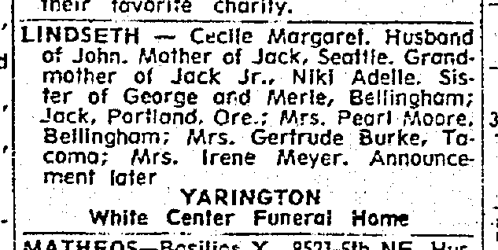
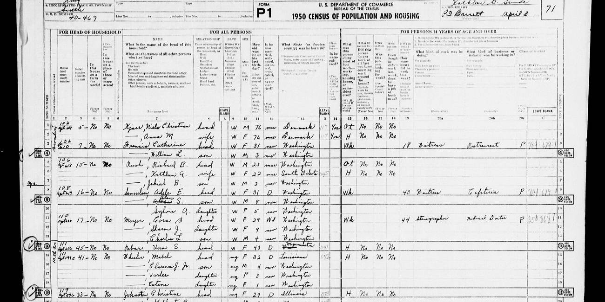
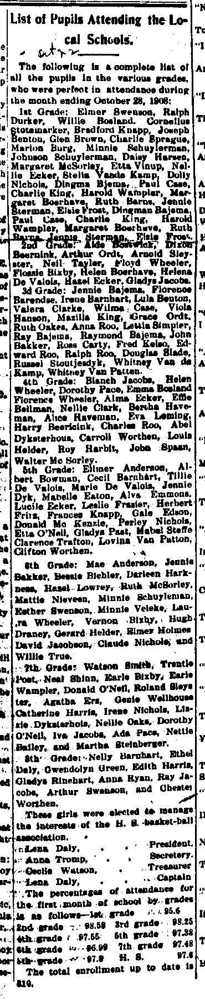
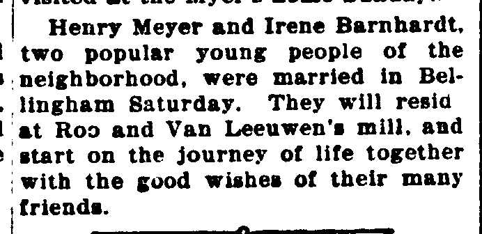
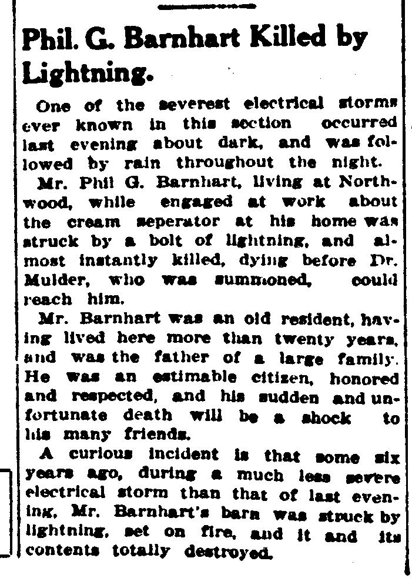

Irene Mary Barnhart 1900–1971
Peter's great-grandmother.
Also recorded as Irene Barns (1916 birth certificate); M. Irene Barnhardt (1917 marriage return); Irene Mary Meyer (m. 1917, rem. 1960); Irene M. Larson (m. 1940 Benjamin Arthur Larson); Mrs. Irene Meyer.
Irene Mary Barnhart was born on 16 Aug 1900 in Lynden, Whatcom County, Washington, United States2. She died on 15 Feb 1971 in Washington, United States17 and was buried at Washington, United States18.
Family
- Partner
- John Smith
- Children
- Estella May Alderson 1916–2008 probable
Life events
| Event | Date | Place and details |
|---|---|---|
| Lived | 1900 | Washington, United States3 |
| Born | 16 Aug 1900 | Lynden, Whatcom County, Washington, United States2 |
| Education | 22 Oct 1908 | Lynden, Whatcom County, Washington, United States Listed in the 3rd Grade on the Lynden school perfect-attendance roll for the first month of the 1908–1909 school year (*The Lynden Tribune*, 22 Oct 1908, p. 2), alongside her sisters Cecil Barnhart (5th Grade) and Nelly Barnhart (8th Grade).11 |
| Education | 22 Oct 1908 | Lynden, Whatcom County, Washington, United States Listed in the 3rd grade on the perfect-attendance roll for the local Lynden/Northwood schools for the month ending 28 October 1908, alongside her siblings Cecil Barnhart (5th grade) and Nelly Barnhart (8th grade).12 |
| Lived | 1910 | Lynden, Whatcom County, Washington, United States4 |
| Note | 19 Jun 1912 | Lynden, Whatcom County, Washington, United States Father Phil G. Barnhart (age 48) killed by a bolt of lightning while working at the cream separator at his Northwood/Lynden home on 19 June 1912 (buried Lynden Cemetery 21 June 1912), four months after Irene's 18-year-old sister Nellie J. Barnhart died of pulmonary tuberculosis at St. Joseph's Hospital, Bellingham, on 12 February 1912.19 |
| Note | 19 Jun 1912 | Lynden, Whatcom County, Washington, United States Death of her father Phillip G. Barnhart at Northwood (northeast of Lynden, Whatcom County, Washington) on the evening of Wednesday, 19 June 1912: while engaged at work about the cream separator at his home during a severe electrical storm about dark, he was struck by a bolt of lightning and almost…20 |
| Lived | 17 Mar 1917 | Lynden, Whatcom County, Washington, United States5 |
| Married | 17 Mar 1917 | Washington, United States13,14 |
| Note | 25 Feb 1918 | Lynden, Whatcom County, Washington, United States Birth of daughter Mary Jene (Jean Mary) Meyer on 25 February 1918 at Lynden, Whatcom County, Washington (father Henry L. Meyer, mother Mary I. Bernhardt / Irene M. Barnhardt); she later married George P. Schneider and died 18 April 2001 (buried Loma Vista Memorial Park, Fullerton, Orange County, California).21 |
| Note | 23 Oct 1919 | Washington, United States Birth of son Charles Llewellyn Meyer on 23 October 1919 at Bellingham, Whatcom County, Washington (father Henry L. Meyers / Henry Lewis Meyer, mother Irene Mary Barhardt / Irene Barnhardt).22 |
| Lived | 1920 | Washington, United States6 |
| Married | 27 Jun 1940 | Washington, United States15 |
| Note | 23 Aug 1940 | Washington, United States Mother Marguerite (Margaret Amelia Walker) Barnhart Pym died at St. Luke's General Hospital, Bellingham, on 23 August 1940, aged 70 (daughter of William A. Walker and Jenette Arbuckle); her Bellingham Herald obituary (ARK 1:1:Q5SQ-27BM) names her six surviving daughters including 'Mrs Irene Larson' (Ferndale, WA) and 'Miss Phillis Barnhart'.23 |
| Note | 31 Oct 1948 | Seattle, King County, Washington, United States Son Charles Llewellyn Meyer (born 23 Oct 1919 Bellingham, longshoreman, residing at 110 Broadway, Seattle) died at King County Hospital #1 (Harborview), Seattle, on 31 October 1948 of malignant hypertension, aged 29; survived by wife Cora Nordtvedt Meyer, children Sharon J. and Charles L. Meyer, mother Mrs. Irene Larson, father Henry Meyer, and sister Mrs. Jeanne Schneider.24 |
| Lived | 12 Apr 1950 | Washington, United States7 |
| Lived | 23 May 1959 | Washington, United States8 |
| Married | 15 Dec 1960 | Washington, United States16 |
| Lived | 1962 | Washington, United States9 |
| Note | 5 Nov 1963 | Seattle, King County, Washington, United States Named as surviving sister 'Mrs. Irene Meyer' in the Seattle Daily Times death notice (5 Nov 1963) for her sister Cecile Margaret Lindseth (died 4 Nov 1963 at West Seattle General Hospital, residing at 7517 31st Ave. S.W., Seattle, aged 66).25 |
| Lived | 15 Feb 1971 | Washington, United States10 |
| Died | 15 Feb 1971 | Washington, United States17 |
| Buried | 18 Feb 1971 | Washington, United States18 |
| Note | parents: Daughter of Phillip Grant Barnhart (1863–1912) and Margaret Amelia Walker (1869–1940), who was a daughter of William Alexander Walker and Jean (Jenette / Jane R.) Arbuckle. Proposed identification of 'Irene Barns', mother of Phillis May Barns (born 5 May 1916, Seattle): Irene Mary Barnhart (FS…26 |
Records











Sources
- Death Notice: Lindseth — Cecile Margaret, The Seattle Daily Times (Seattle, Washington), 5 November 1963, p. 31.
LINDSETH — Cedle Margaret. Husband of John. Mather of Jack, Seattle. Grandmother of Jack Jr., Niki Adelle. Sister of George and Merle, Bellingham; Jack, Porflond, Ore.; Mrs. Pearl Moore. Bellingham; Mrs. Gertrude Burke, Tacoma; Mrs. Irene Meyer. Announcement later YARINGTON White Center Funeral Home
Translation: LINDSETH — Cecile Margaret. Wife of John. Mother of Jack, Seattle. Grandmother of Jack Jr., Niki Adelle. Sister of George and Merle, Bellingham; Jack, Portland, Ore.; Mrs. Pearl Moore, Bellingham; Mrs. Gertrude Burke, Tacoma; Mrs. Irene Meyer. Announcement later, Yarington White Center Funeral Home.
Named as surviving sister 'Mrs. Irene Meyer' (no residence town stated for her) in the Seattle Daily Times death notice of her older sister Cecile Margaret Lindseth (wife of John Lindseth; mother of Jack Lindseth of Seattle; grandmother of Jack Jr. and Niki Adelle; sister of George and Merle [Barnhart] of Bellingham, Jack [Barnhart] of Portland, Oregon, Mrs. Pearl Moore of Bellingham, Mrs. Gertrude Burke of Tacoma, and Mrs. Irene Meyer).
- Certificate of Death: Irene Mary Meyer (1971); Certificate of Marriage: Henry L. Meyer and Irene Larson (1960); 1900 Census: Irene M Barnhart, WA Death Certificate State File No. 4576, Local File No. 71-86; Whatcom Co. Marriage Certificate No. 27287; 1900 Census Delta Precinct, Whatcom Co., Sheet 12A, Household 218.
STATE FILE NUMBER 4576 | 1. DECEASED—NAME: IRENE MARY MEYER | 2. SEX: Female | 3. DATE OF DEATH: Feb. 15, 1971 | 5a. AGE—LAST BIRTHDAY: 70 | 6. DATE OF BIRTH: Aug. 16, 1900 | 8. STATE OF BIRTH: Washington | 15. FATHER—NAME: Phillip Barnhart | 16. MOTHER—MAIDEN NAME: Millie H. Walker || NO. 27287 ... Irene Larson (Female) (Place of Birth) Lynden, Wash. (Age last Birthday) Legal of Bellingham, Wash. || Irene M Barnhart, Daughter, Single, White, Age 1y, Birth Aug 1899, Washington
Born at Lynden, Whatcom County, Washington, daughter of Phillip Grant Barnhart and Margaret Amelia Walker. Her 1971 Washington death certificate (State File No. 4576, informant husband Henry L. Meyer) gives her birth date as 'Aug. 16, 1900' and birthplace 'Washington'; her 1960 Whatcom County marriage certificate (No. 27287) and her son Charles L. Meyer's 1948 death certificate (State File No. 18626) give her birthplace as 'Lynden, Wash.' / 'Linden, Washington'; her Woodlawn Cemetery headstone and Find a Grave memorial 8580575 give 16 Aug 1900 (1900–1971); and the 1910, 1920, and 1950 censuses all give her birth year as 1900. Note: in the 1900 US Census of Delta Precinct, Whatcom County (taken June 1900, ARK 1:1:MM5M-3MV), she is already enumerated as 'Irene M Barnhart', daughter, age '1y', born 'Aug 1899' in Washington—which would make her 16 years 8 months old in May 1916 and 17 years 7 months old when her age was recorded as '17 years' on her 17 March 1917 marriage certificate.
- Irene M Barnhart in entry for Philip * Barnhart, Delta, Whatcom, Washington, 1900, Delta Precinct, Whatcom County, Washington, Sheet 12A, Household 218, Line 19; raw/records/MM5M-3MV.json.
Philip * Barnhart, Head, 37y, Birth Nov 1863 Iowa | Margaret A Barnhart, Wife, 31y, Birth Oct 1869 Missouri, CntChildren 7, CntLivingChildren 7 | Pearl A Barnhart, Daughter, 14y, Sep 1886 Minnesota | George A Barnhart, Son, 12y, Feb 1888 Minnesota | Gertie M Barnhart, Daughter, 10y, Nov 1890 Washington | Nellie J Barnhart, Daughter, 7y, Dec 1893 Washington | Merle E Barnhart, Son, 5y, Aug 1895 Washington | Cecil M Barnhart, Daughter, 3y, Jul 1897 Washington | Irene M Barnhart, Daughter, 1y, Aug 1899 Washington
1900 US Federal Census, Delta Precinct, Whatcom County, Washington, Sheet 12A, Household 218, Line 19: Irene M Barnhart, daughter, white, female, age 1y, born Aug 1899 in Washington (father born Iowa, mother born Missouri), in the household of Philip * Barnhart (head, 37y, born Nov 1863 Iowa, married 14 years, parents born Pennsylvania) and Margaret A Barnhart (wife, 31y, born Oct 1869 Missouri, married 14 years, 7 children born, 7 living, parents born Canada Eng), with siblings Pearl A (14y, b. Sep 1886 MN), George A (12y, b. Feb 1888 MN), Gertie M (10y, b. Nov 1890 WA), Nellie J (7y, b. Dec 1893 WA), Merle E (5y, b. Aug 1895 WA), and Cecil M (3y, b. Jul 1897 WA).
- Irene M Barnhart in entry for G Phillip Barnhart, North Lynden, Whatcom, Washington, 1910, ED 359, Sheet 12A, North Lynden Precinct, Whatcom County, Washington; raw/records/MGJQ-9QK.json.
G Phillip Barnhart, Head, 45y, Iowa | Margaret Barnhart, Wife, 41y, Missouri | George E Barnhart, Son, 22y, Minnesota | Gertrude M Barnhart, Daughter, 19y, Washington | Nellie J Barnhart, Daughter, 16y, Washington | Merle E Barnhart, Son, 14y, Washington | Cecile E Barnhart, Daughter, 12y, Washington | Irene M Barnhart, Daughter, 10y, Washington | Elsie W Barnhart, Daughter, 8y, Washington | Phillis Barnhart, Daughter, 2y, Washington
1910 US Federal Census, North Lynden Precinct, ED 359, Sheet 12A, Whatcom County, Washington: Irene M Barnhart, daughter, female, white, age 10y, single, born 1900 in Washington (father born Iowa, mother born Missouri), in the household of G Phillip Barnhart (45y, born Iowa) and Margaret Barnhart (41y, born Missouri), with siblings George E (22y, b. MN), Gertrude M (19y, b. WA), Nellie J (16y, b. WA), Merle E (14y, b. WA), Cecile E (12y, b. WA), Elsie W (8y, b. WA), and Phillis Barnhart (2y, b. 1908 WA).
- Certificate of Marriage, License No. 3201 (17 Mar 1917); The Lynden Tribune (22 Mar 1917), Whatcom County Marriage License No. 3201, Document No. nwwtcmr3201; research/genealogybank/raw/irene-mary-barnhart/1917-03-22-lynden-tribune-p5.png.
BRIDE: Full Name: M Irene Barnhardt | Residence: Lynden | Age at last Birthday: 17 years || The Lynden Tribune (22 Mar 1917, p. 5): Henry Meyer and Irene Barnhardt, two popular young people of the neighborhood, were married in Bellingham Saturday. They will resid[e] at Roo and Van Leeuwen's mill, and start on the journey of life together with the good wishes of their many friends.
Recorded on her 17 March 1917 Whatcom County marriage certificate (License No. 3201) as residing at 'Lynden' (groom Henry L. Meyer residing at 'Lynden Wash.'); *The Lynden Tribune* (22 March 1917, p. 5, 'North Prairie' column) reported that 'Henry Meyer and Irene Barnhardt, two popular young people of the neighborhood, were married in Bellingham Saturday. They will resid[e] at Roo and Van Leeuwen's mill'.
- Irene Meyer in entry for Henry Meyer, Bellingham, Whatcom, Washington, 1920, Bellingham, Whatcom County, Washington, Sheet 7A, Household 183, Line 4; raw/records/MHN6-LNS.json.
Sheet 7A, Household 183: Line 3: Henry Meyer, Head, Married, White, 25y, Birth 1895 Minnesota (Father New York, Mother Germany) | Line 4: Irene Meyer, Wife, Married, White, 20y, Birth 1900 Washington (Father Iowa, Mother Missouri) | Line 5: Jean Meyer, Daughter, Single, White, 1y10m, Birth 1918 Washington | Line 6: Charles Meyer, Son, Single, White, 3m, Birth 1919 Washington
1920 US Federal Census, Bellingham, Whatcom County, Washington, Sheet 7A, Household 183, lines 3–6: Henry Meyer (Head, married, white, 25y, born 1895 Minnesota, father born New York, mother born Germany), Irene Meyer (Wife, married, white, 20y, born 1900 Washington, father born Iowa, mother born Missouri), Jean Meyer (Daughter, 1y 10m, born 1918 Washington), and Charles Meyer (Son, 3m, born 1919 Washington). No 4-year-old daughter is in the household (Estella was enumerated on 21 Jan 1920 in Portland, Oregon with Scott W. and May C. Alderson).
- Irene Larson in entry for Benjamin Larson, Bellingham, Whatcom, Washington, 12 Apr 1950, ED 37-70, Sheet 43, Dwelling 471, Lines 17–18 (510½ E. Magnolia, Bellingham); raw/records/6X1H-TH61.json.
E. Magnolia | 510½ | 471 | Line 17: Larson, Benjamin | head | W | M | 70 | mar | Minnesota | wk | 40 | carpenter | mine | P || Line 18: Larson, Irene | wife | W | F | 50 | mar | Wash. | H || Seattle ED 40-467 Sheet 71 Lines 11–13: Meyer, Cora B | head | W | F | 29 | Wd | Washington | Wk | 44 | Stenographer | Medical Doctor || —, Sharon J. | daughter | W | F | 9 | nev | Washington || —, Charles L | son | W | M | 4 | nev | Washington
1950 US Federal Census, Bellingham, Whatcom County, Washington, ED 37-70, Sheet 43, Dwelling 471, lines 17–18 (enumerated 12 April 1950 by Mrs. Ruth C. Cannon): 'Larson, Benjamin' (head, white, male, age 70, married, born Minnesota, worked 40 hrs last week as carpenter, mine) and 'Larson, Irene' (wife, white, female, age 50, married, born Wash., keeping house 'H') at 510½ E. Magnolia. In the same 1950 census of Bellingham (ED 37-73, Sheet 17, Dwelling 241, line 6, 110½ E. Holly, ARK 1:1:6X1Z-7G76), her first husband 'Meyer, Henry' (head, white, male, age 54, born Iowa) was working 56 hrs/week as 'manager, apartment'; and in Seattle (ED 40-467, Sheet 71, Dwelling 17, lines 11–13, enumerated 3 April 1950, ARK 1:1:6X15-XFLD), her late son's widow 'Meyer, Cora B' (head, white, female, age 29, widowed, born Washington, stenographer for medical doctor) was enumerated with Irene's two grandchildren 'Meyer, Sharon J.' (daughter, age 9, born Washington) and 'Meyer, Charles L' (son, age 4, born Washington).
- Certificate of Death: Benjamin Arthur Larson, 23 May 1959, WA Death Certificate State File No. 13171, Registrar's No. 186.
STATE FILE NO. 13171, REGISTRAR'S NO. 186 | 1. PLACE OF DEATH: Whatcom, Bellingham, Parkhaven Nursing Home | 2. USUAL RESIDENCE: Wash., Whatcom, Bellingham, 510 Magnolia | 3. NAME OF DECEASED: BENJAMIN ARTHUR LARSON | 4. DATE OF DEATH: May 23, 1959 | 5. Male | 6. White | 7. Married | 8. DATE OF BIRTH: 5-17-1879 | 9. AGE: 80 | 10a. USUAL OCCUPATION: Miner | 10b. KIND OF BUSINESS OR INDUSTRY: Coal Mine | 11. BIRTHPLACE: Minnesota | 13. FATHER'S NAME: Chris Larson | 16. SOCIAL SECURITY NO.: 531-03-1607 | 17. INFORMANT: Mrs. Irene Larson, 510 Magnolia, Bellingham, Wash. | 18. CAUSE OF DEATH: Carcinoma of prostate (2 yrs.) | 23a. Burial, 5-27-59, Enterprise Cemetery, Whatcom County, Wash.
Second husband Benjamin Arthur Larson died at Parkhaven Nursing Home, Bellingham, Whatcom County, Washington, on 23 May 1959, aged 80 (WA Death Certificate State File No. 13171, Registrar's No. 186; born 17 May 1879 in Minnesota, coal mine miner, son of Chris Larson; SSN 531-03-1607; cause of death: carcinoma of prostate, 2 yrs.; buried 27 May 1959 at Enterprise Cemetery, Whatcom County, Wash., John Bob Moles, Ferndale, funeral director). His usual residence is recorded as '510 Magnolia, Bellingham, Whatcom, Wash.' and the informant is 'Mrs. Irene Larson, 510 Magnolia, Bellingham, Wash.'
- Polk's Bellingham (Whatcom County, Wash.) City Directory, 1962, including Ferndale, Alphabetical Directory pp. 269, 292 (scans 515, 538); Street Directory p. 169 (scan 893).
p. 269: Magnolia Court Mrs Irene M Meyer mgr 510-14 1/2 E Magnolia | p. 292: Meyer Henry (Irene M) h510 E Magnolia | Meyer Irene M Mrs mgr Magnolia Court r510 E Magnolia | Street Directory p. 169: 510-14 1/2 Magnolia Court RE4-1608 | 510 Meyer Irene M Mrs RE4-1608
1962 Polk's Bellingham and Whatcom County Directory (pp. 269, 292, and Street Directory p. 169): 'Meyer Henry (Irene M) h510 E Magnolia' and 'Meyer Irene M Mrs mgr Magnolia Court r510 E Magnolia' ('Magnolia Court Mrs Irene M Meyer mgr 510-14 1/2 E Magnolia', telephone RE4-1608). Her younger sister Elsie W. Carlson's Bellingham Herald obituary (16 July 1962, p. 5) likewise names her among the surviving sisters as 'Mrs. Irene Meyer of Bellingham'.
- Certificate of Death: Irene Mary Meyer, 15 Feb 1971, WA Death Certificate State File No. 4576, Local File No. 71-86.
13a. USUAL OCCUPATION: Manager | 13b. KIND OF BUSINESS OR INDUSTRY: Magnolia Apartments | 14a. RESIDENCE—STATE: Washington | 14b. COUNTY: Whatcom | 14c. CITY, TOWN, OR LOCATION: Bellingham | 14d. INSIDE CITY LIMITS: Yes | 14e. STREET AND NUMBER: 510 Magnolia Court | 17a. INFORMANT—NAME: Henry L. Meyer | 17b. MAILING ADDRESS: 510 Magnolia Court, Bellingham, Wash. 98225
Usual residence and occupation recorded on her 15 February 1971 Washington death certificate (State File No. 4576, items 13a–b, 14a–e, 17a–b): '510 Magnolia Court', Bellingham, Whatcom County, Washington, where she worked as 'Manager' of 'Magnolia Apartments' (the same address where she had lived with her second husband Benjamin A. Larson in 1950–1959 and where her surviving husband Henry L. Meyer lived until his death on 9 April 1972).
- List of Pupils Attending the Local Schools, 22 Oct 1908, p. 2, research/genealogybank/raw/irene-mary-barnhart/1908-10-22-lynden-tribune-p1.txt.
List of Pupils Attending the Local Schools. The following is a complete list of nil [all] the pupils in the various grades, who were perfect in attendance during the month ending October 28, 1908: ... 3d Grade: Jennie Bajema, Florence Barendse, Irene Barnhart, Lula Benton ... 5th Grade: Ellmer Anderson, Albert Bowman, Cecil Barnhart ... 8th Grade: Nelly Barnhart
Listed in the 3rd Grade on the Lynden school perfect-attendance roll for the first month of the 1908–1909 school year (*The Lynden Tribune*, 22 Oct 1908, p. 2), alongside her sisters Cecil Barnhart (5th Grade) and Nelly Barnhart (8th Grade).
- List of Pupils Attending the Local Schools, The Lynden Tribune (Lynden, Washington), 22 October 1908, p. 1.
List of Pupils Attending the Local Schools. The following is a complete list of nil the pupils in the various grades, who were perfect in attendance during the month ending October 28, 1908: ... 3d Grade: Jennie Bajema, Florence Barendse, Irene Barnhart, Lula Benton, ... sth Grade: Ellmer Anderson, Albert Bowman, Cecil Barnhart, ... Bth Grade: Nelly Barnhart,
Translation: List of Pupils Attending the Local Schools. The following is a complete list of all the pupils in the various grades, who were perfect in attendance during the month ending October 28, 1908: ... 3d Grade: Jennie Bajema, Florence Barendse, Irene Barnhart, Lula Benton, ... 5th Grade: Elmer Anderson, Albert Bowman, Cecil Barnhart, ... 8th Grade: Nelly Barnhart,
Listed in the 3rd grade on the perfect-attendance roll for the local Lynden/Northwood schools for the month ending 28 October 1908, alongside her siblings Cecil Barnhart (5th grade) and Nelly Barnhart (8th grade).
- Certificate of Marriage, License No. 3201, Henry L. Meyer and M. Irene Barnhardt, 17 Mar 1917; Certificate of Death, Irene Mary Meyer, 15 Feb 1971, Whatcom County Marriage License No. 3201, Document No. nwwtcmr3201.
WASHINGTON STATE BOARD OF HEALTH | BUREAU OF VITAL STATISTICS | CERTIFICATE OF MARRIAGE | License No. 3201 | GROOM: Full Name: Henry L Meyer | Residence: Lynden Wash. | Age at last Birthday: 22 years | Color or Race: White | Single, Widowed or Divorced: Single | Number of Marriage: 1st | Birthplace: Iowa | Occupation: Teamster | Name of Father: Charles Meyer | Birthplace of Father: N Y | Maiden Name of Mother: Minnie Meyer | Birthplace of Mother: Germany || BRIDE: Full Name: M Irene Barnhardt | Residence: Lynden | Age at last Birthday: 17 years | Color or Race: White | Single, Widowed or Divorced: Single | Number of Marriage: 1st | Birthplace: Washington | Occupation: [blank] | Name of Father: Phil Barnhardt | Birthplace of Father: Iowa | Maiden Name of Mother: Margaret Walker | Birthplace of Mother: St Louis Mo || We, the groom and bride named in this certificate, hereby certify that the information given therein is correct ... Henry L. Meyer Groom, M. Irene Barnhardt Bride || I HEREBY CERTIFY, That Henry L. Meyer and M. Irene Barnhardt were joined in Marriage by me in accordance with the laws of the State of Washington, at Bellingham this 17 day of March, 1917. | Signature of Witnesses to the Marriage: Marguerit Pym, Chas Meyer | Signature of person performing the ceremony: William H Pemberton, Official Station: Judge of Superior Court
First marriage, at Bellingham, Whatcom County, Washington, on 17 March 1917 (Washington State Board of Health Certificate of Marriage, License No. 3201, Whatcom County Auditor Document No. nwwtcmr3201): Groom Henry L Meyer, residence Lynden Wash., age at last birthday 22 years, white, single, 1st marriage, birthplace Iowa, occupation Teamster, father Charles Meyer (born N Y), mother Minnie Meyer (born Germany). Bride M Irene Barnhardt, residence Lynden, age at last birthday 17 years, white, single, 1st marriage, birthplace Washington, occupation [blank], father Phil Barnhardt (born Iowa), mother Margaret Walker (born St Louis Mo). Joined in marriage at Bellingham on 17 March 1917 by William H Pemberton, Judge of Superior Court, in the presence of witnesses Marguerit Pym (bride's mother) and Chas Meyer (groom's father).
- Northwood, The Lynden Tribune (Lynden, Washington), 22 March 1917, p. 5; 20 December 1917, p. 6; and 11 May 1916, p. 1.
Henry Meyer and Irene Barnhardt, two popular young people of the neighborhood, were married in Bellingham Saturday. They will resid at Roo and Van Leeuwen's mill, and start on the journey of life together with the good wishes of their many friends.
Translation: Henry Meyer and Irene Barnhardt, two popular young people of the neighborhood, were married in Bellingham Saturday. They will reside at Roo and Van Leeuwen's mill, and start on the journey of life together with the good wishes of their many friends.
Married Henry Meyer in Bellingham, Whatcom County, Washington on Saturday, 17 March 1917 (ten months after Estella May Alderson's birth on 5 May 1916), residing after marriage at Roo and Van Leeuwen's mill in the Northwood district; on the weekend of Estella's birth (Saturday–Sunday, 6–7 May 1916), Irene's older sister Cecile Margaret (Barnhart) Lindseth and her husband John Lindseth ('Mr. and Mrs. J. Lindseth and son') visited the B. Lindseth home in Lynden (11 May 1916, p. 1); and on Saturday, 15 December 1917, 'Mrs. Henry Meyer, Miss Phyllis Barnhardt, Miss Dorothy Herre, Mrs. J. B. Pym and son, Jack' (mother and brother of biological-father candidate Avery Pym) visited Bellingham together from Northwood (20 Dec 1917, p. 6).
- Marriage Certificate No. 9476: Benjamin A. Larson and Irene Meyer, 27 Jun 1940, Whatcom County Marriage Certificate No. 9476.
FORM A | STATE OF WASHINGTON, County of Whatcom | No. 9476 | MARRIAGE CERTIFICATE | THIS IS TO CERTIFY, that the undersigned, a Minister, by authority of a License bearing date the 23rd day of June, A.D. 1940 and issued by the County Auditor of the County of Whatcom did, on the 27th day of June, A.D. 1940, at the hour of 7:30 P.M. in the County and State aforesaid, join IN LAWFUL WEDLOCK Benjamin A. Larson of the County of Whatcom, of the State of Wash and Irene Meyer of the County of Whatcom, of the State of Wash, with their mutual assent, in the presence of Eunice G. McCarthy and N. P. Jensen, witnesses. | WITNESSES: Eunice G McCarthy, N. P. Jensen | PARTIES: Benjamin A. Larson (MALE), Irene Meyer (FEMALE) | OFFICIATING CLERGYMAN OR OFFICER: a DNA match, P.O. ADDRESS: Bellingham, Washington
Second marriage, in Whatcom County, Washington, on 27 June 1940 at 7:30 p.m. (Whatcom County Marriage Certificate No. 9476, license dated 23 June 1940): Benjamin A. Larson of Whatcom County, State of Wash., and Irene Meyer of Whatcom County, State of Wash. Officiated by Minister a DNA match (P.O. Address: Bellingham, Washington) in the presence of witnesses Eunice G. McCarthy and N. P. Jensen.
- Marriage Certificate No. 27287: Henry L. Meyer and Irene Larson, 15 Dec 1960, Whatcom County Marriage Certificate No. 27287 (60B-299).
STATE OF WASHINGTON, County of Whatcom | NO. 27287 | THIS CERTIFIES, that the undersigned, an ordained minister, by authority of a License bearing date the 11th day of December, A.D. 1960 and issued by the County Auditor of the County of Whatcom did, on the 15th day of December A.D. 1960, at the hour of 4:30 P.M. in this County and State join in LAWFUL WEDLOCK Henry L. Meyer (Male) (Place of Birth) Iowa (Age last Birthday) Legal of Bellingham, Wash. and Irene Larson (Female) (Place of Birth) Lynden, Wash. (Age last Birthday) Legal of Bellingham, Wash. with their mutual assent, in the presence of A. W. Morgenthaler and Minnie E. Lowrey witnesses. | WITNESSES: A. W. Morgenthaler, Minnie E. Lowrey | PARTIES: Henry L. Meyer (MALE), Irene Larson (FEMALE) | OFFICIATING CLERGYMAN OR OFFICER: Rev. D. L. Swerdfeger, Garden St. Meth. Church, Bellingham, Washington | Filed Dec 19, 1960
Third marriage (remarriage to her first husband Henry L. Meyer, nineteen months after Benjamin Arthur Larson's death), at Bellingham, Whatcom County, Washington, on 15 December 1960 at 4:30 p.m. (Whatcom County Auditor Marriage Certificate No. 27287, license dated 11 Dec 1960, filed 19 Dec 1960): Groom Henry L. Meyer (Male, Place of Birth: Iowa, Age last Birthday: Legal, of Bellingham, Wash.) and Bride Irene Larson (Female, Place of Birth: Lynden, Wash., Age last Birthday: Legal, of Bellingham, Wash.). Officiated by ordained minister Rev. D. L. Swerdfeger of Garden St. Methodist Church, Bellingham, in the presence of witnesses A. W. Morgenthaler and Minnie E. Lowrey.
- Certificate of Death: Irene Mary Meyer, 15 Feb 1971, WA Death Certificate State File No. 4576 (Local File No. 71-86) and State File No. 9662 (Local File No. 72-181); raw/records/QLWS-XLWF.json.
LOCAL FILE NUMBER 71-86 | STATE FILE NUMBER 4576 | 1. DECEASED—NAME: IRENE MARY MEYER | 2. SEX: Female | 3. DATE OF DEATH: Feb. 15, 1971 | 4. RACE: White | 5a. AGE—LAST BIRTHDAY: 70 | 6. DATE OF BIRTH: Aug. 16, 1900 | 7a. COUNTY OF DEATH: Whatcom | 7b. CITY, TOWN, OR LOCATION OF DEATH: Bellingham | 7d. HOSPITAL OR OTHER INSTITUTION: St. Luke's Hospital | 8. STATE OF BIRTH: Washington | 10. MARRIED | 11. SURVIVING SPOUSE: Henry L. Meyer | 12. SOCIAL SECURITY NUMBER: 539-24-0031-A | 13a. USUAL OCCUPATION: Manager | 13b. KIND OF BUSINESS OR INDUSTRY: Magnolia Apartments | 14a–e. RESIDENCE: Washington, Whatcom, Bellingham, 510 Magnolia Court | 15. FATHER—NAME: Phillip Barnhart | 16. MOTHER—MAIDEN NAME: Millie H. Walker | 17a–b. INFORMANT—NAME: Henry L. Meyer, 510 Magnolia Court, Bellingham, Wash. 98225 | 18. PART I: (a) Pulmonary insufficiency (2 mos.) DUE TO (b) Pulmonary fibrosis, idiopathic (15 yrs.); PART II: A.S.H.D. | 21e. DEATH OCCURRED: 7:45 A.M. | 23a. CERTIFIER: D. Dean Nelson, M.D. | 24a–d. Burial, Feb. 18, 1971, Greenacres Memorial Park, Whatcom County, Washington | 25a. FUNERAL HOME: JONES FUNERAL HOME, 322 E. Holly St., Bellingham, Wash. 98225 || STATE FILE NUMBER 9662 | 1. DECEASED—NAME: HENRY L. MEYER | 3. DATE OF DEATH: April 9, 1972 | 6. DATE OF BIRTH: April 17, 1895 | 8. STATE OF BIRTH: Iowa | 10. Widowed | 14e. 510 Magnolia Court | 15. FATHER—NAME: Charles Meyer | 17a–b. INFORMANT: Mrs. Jeanne M. Schneider, [address omitted], Rosemead, California 91770
Died 15 February 1971 at 7:45 a.m. at St. Luke's Hospital, Bellingham, Whatcom County, Washington, aged 70 (WA Death Certificate State File No. 4576, Local File No. 71-86). Born Aug. 16, 1900 in Washington; Married; surviving spouse: Henry L. Meyer; SSN: 539-24-0031-A; usual occupation: Manager, Magnolia Apartments; residence: 510 Magnolia Court, Bellingham, Whatcom County, WA; father: Phillip Barnhart; mother: Millie H. Walker; informant: Henry L. Meyer, 510 Magnolia Court, Bellingham, Wash. 98225. Cause of death: pulmonary insufficiency (2 mos.) due to idiopathic pulmonary fibrosis (15 yrs.), with A.S.H.D. [arteriosclerotic heart disease] as other significant condition; certified by D. Dean Nelson, M.D., 710 Dupont Street, Bellingham. Her surviving husband Henry L. Meyer died fourteen months later on 9 April 1972 at Shuksan Convalescent Center, Bellingham, aged 76 (WA Death Certificate State File No. 9662, Local File No. 72-181; born 17 April 1895 in Iowa, logger & maintenance man at Whatcom Co. Court House, residence 510 Magnolia Court, Bellingham, son of Charles Meyer; informant: daughter Mrs. Jeanne M. Schneider, [address omitted], Rosemead, California 91770).
- Irene Mary Barnhart Meyer (1900–1971), Woodlawn Cemetery, Ferndale, Whatcom County, Washington, Find a Grave Memorial 8580575 (Plot IOOF 1, Lot 39, Grave 2A); BillionGraves Record 5966702; raw/records/QVVH-1K3C.json; raw/records/2HTX-2HM.json.
IRENE MARY MEYER / WIFE AND MOTHER / 1900 1971 / "THE LORD IS MY SHEPHERD, I SHALL NOT WANT"
Buried 18 February 1971 (Jones Funeral Home, Bellingham). Although box 24b on her death certificate was typed as 'Greenacres Memorial Park', her actual grave and bronze marker—alongside those of her husband Henry L. Meyer (1895–1972, Memorial 8580574) and her son Charles L. Meyer (1919–1948, Memorial 5914256)—are in Woodlawn Cemetery, 5977 Northwest Drive, Ferndale, Whatcom County, Washington (Plot: IOOF 1, Lot 39, Grave 2A). Her bronze grave marker reads: 'IRENE MARY MEYER / WIFE AND MOTHER / 1900 1971 / "THE LORD IS MY SHEPHERD, I SHALL NOT WANT"'.
- Certificate of Death: Phil G. Barnhart (19 Jun 1912); Register of Deaths: Nellie J. Barnhart (12 Feb 1912), Whatcom Co. Town of Lynden Record No. 86, File No. 5078, Registered No. 19; nw365-6-0-39_bellingham_deathrgstr_v1_0102-35 (p. 45, No. 27).
PLACE OF DEATH: County of Whatcom, Town or City of Lynden | Record No. 86, File No. 5078, Registered No. 19 | Full Name: Phil G. Barnhart | SEX: Male | COLOR: White | SINGLE, MARRIED, WIDOWED, OR DIVORCED: Married | DATE OF BIRTH: Nov 30, 1863 | AGE: 48 years, 6 months, 19 days | BIRTHPLACE: Iowa | NAME OF FATHER: Geo. H. Barnhart | BIRTHPLACE OF FATHER: Pa. | MAIDEN NAME OF MOTHER: not known | OCCUPATION: Farmer | (Informant) Mrs. P. G. Barnhart, (Address) Lynden Wn | DATE OF DEATH: June 19, 1912, at 8:45 P.M. | The CAUSE OF DEATH was as follows: Lightning, etc. | Contributory: I saw the dead man one hour after the accident | (Signed) D. Mulder, M.D., (Address) Lynden | PLACE OF BURIAL OR REMOVAL: Lynden Wn | DATE OF BURIAL: June 21, 1912 || REGISTER OF DEATHS, CITY OF BELLINGHAM, p. 45, No. 27: Barnhart Nellie J. | Died When: [Feb] 12 [1912] | Place of Death: St. Josephs Hospital | Age: 18 | Nativity: Lynden Wn | Sex: F | Color: W | Social Relation: Single | Occupation: School girl | Father's Birth Place: Iowa | Mother's Birth Place: Missouri | Cause of Death: Pul. Tuberculosis | Attending Physician: W. C. Keyes | Certificate Filed: [Feb] 12 [1912] | Undertaker: J. E. Knapp | Where Buried: Lynden Wn
Washington State Board of Health Certificate of Death for Phil G. Barnhart (Record No. 86, File No. 5078, Registered No. 19; filed 20 June 1912): died at Town of Lynden, Whatcom County, on 19 June 1912 at 8:45 P.M., aged 48 years, 6 months, 19 days (born 30 Nov 1863 in Iowa, married, farmer, son of Geo. H. Barnhart born Pa., mother's maiden name not known, born Pa.; informant Mrs. P. G. Barnhart, Lynden Wn; cause of death: 'Lightning, etc. / Contributory: I saw the dead man one hour after the accident', signed D. Mulder, M.D., Lynden; buried Lynden Wn, 21 June 1912, J. E. Knopp, undertaker). *The Lynden Tribune* (20 June 1912, p. 4, 'Phil. G. Barnhart Killed by Lightning') reported that he was struck at his Northwood home while working about the cream separator during the evening storm of 19 June 1912. Four months earlier, on 12 February 1912, Irene's older sister Nellie J. Barnhart died at St. Joseph's Hospital, Bellingham, aged 18, single, school girl, born Lynden, WA, father born Iowa, mother born Missouri, of pulmonary tuberculosis, buried Lynden, WA (Bellingham City Clerk, Register of Deaths, 1904–1915, p. 45, No. 27, ref. nw365-6-0-39_bellingham_deathrgstr_v1_0102-35).
- Phil. G. Barnhart Killed by Lightning, The Lynden Tribune (Lynden, Washington), 20 June 1912, p. 3; and Resolutions of Condolence, 4 July 1912, p. 6.
Phil. G. Barnhart Killed by Lightning. One of the severest electrical storm!! ever known In this section occurred last evening about dark, and was followed by rain throughout the night. Mr. Phil Gk Barnhurt. li\!ng at Northv.ood, while engaged at work about tbe cream seperator «t his home w.ts struck by a bolt of lightning, and almost instantly killed, dying before Dr, Mulder, who was summoned, could leach him. Mr. Barnhart was an old resilient, having lived here more than twenty years, and was tbe father of a large family He was an estimable citizen, honored and resjiected, and his sudden and unfortunate death will be a shock to his many friends. A curious incident is that some six years ago, during a much less serere electrical storm than that of last evening. Mr. Barnhart's barn was struck by lightning, set on fire, and it and its con testta totally destroyed.
Translation: Phil. G. Barnhart Killed by Lightning. One of the severest electrical storms ever known in this section occurred last evening about dark, and was followed by rain throughout the night. Mr. Phil. G. Barnhart, living at Northwood, while engaged at work about the cream separator at his home was struck by a bolt of lightning, and almost instantly killed, dying before Dr. Mulder, who was summoned, could reach him. Mr. Barnhart was an old resident, having lived here more than twenty years, and was the father of a large family. He was an estimable citizen, honored and respected, and his sudden and unfortunate death will be a shock to his many friends. A curious incident is that some six years ago, during a much less severe electrical storm than that of last evening, Mr. Barnhart's barn was struck by lightning, set on fire, and it and its contents totally destroyed.
Death of her father Phillip G. Barnhart at Northwood (northeast of Lynden, Whatcom County, Washington) on the evening of Wednesday, 19 June 1912: while engaged at work about the cream separator at his home during a severe electrical storm about dark, he was struck by a bolt of lightning and almost instantly killed, dying before Dr. Mulder could reach him (six years after his barn had been struck by lightning and burned); he had lived in the district for more than twenty years and was a member of Lynden Lodge No. 140, Fraternal Union of America, which passed formal resolutions of condolence on 2 July 1912.
- Mary Jene Meyer (25 Feb 1918); NUMIDENT: Jean Meyer Schneider (1918–2001), raw/records/DR9Q-SJZM.json; raw/records/6KWP-CP2F.json; WA Death Certificate State File No. 9662.
Mary Jene Meyer, Female, Birth: 25 Feb 1918, Washington, United States | Father: Henry L Meyer | Mother: Mary I Bernhardt || Jean Meyer Schneider (Jean Mary Meyer / Jeanne M Schneider) | Birth: 25 Feb 1918, Lynden, Washington, United States | Death: 18 Apr 2001 | Residence: Placentia, Orange, California, United States | Father: Henry L Meyer | Mother: Irene M Barnhardt || 17a. INFORMANT—NAME: Mrs. Jeanne M. Schneider | 17b. MAILING ADDRESS: 7956 Newmark Ave., Rosemead, California 91770
Washington, County Birth Registers, 1873–1965 (ARK 1:1:DR9Q-SJZM) records the birth of Mary Jene Meyer on 25 Feb 1918 in Washington to Henry L Meyer and Mary I Bernhardt. Her Social Security NUMIDENT file (ARK 1:1:6KWP-CP2F) records her as Jean Meyer Schneider / Jean Mary Meyer / Jeanne M Schneider, born 25 Feb 1918 at Lynden, Washington, daughter of Henry L Meyer and Irene M Barnhardt, applied for SSN Dec 1936, residence Placentia, Orange County, California, died 18 Apr 2001. On her father Henry L. Meyer's April 1972 death certificate (State File No. 9662), she is the informant 'Mrs. Jeanne M. Schneider, 7956 Newmark Ave., Rosemead, California 91770'.
- Meyers (23 Oct 1919); NUMIDENT: Charles Llewellyn Meyer, raw/records/DRV4-X23Z.json; raw/records/6KWR-B9ND.json; WA Death Certificate State File No. 18626.
Meyers, Male, Birth: 23 Oct 1919, Washington, United States | Father: Henry L Meyers | Mother: Irene Mary Barhardt || Charles Llewellyn Meyer | SSN: 539031787 | Birth: 23 Oct 1919, Bellingham, Washington, United States | Death: Oct 1948 | Father: Henry L Meyer | Mother: Irene Barnhardt
Washington, County Birth Registers, 1873–1965 (ARK 1:1:DRV4-X23Z) records the birth of a male child Meyers on 23 Oct 1919 in Washington to Henry L Meyers and Irene Mary Barhardt. His Social Security NUMIDENT record (ARK 1:1:6KWR-B9ND, SSN 539-03-1787) and 1948 Washington death certificate (State File No. 18626) give his full name as Charles Llewellyn Meyer, born 23 Oct 1919 at Bellingham, Washington, son of Henry Lewis Meyer (born Iowa) and Irene Barnhardt (born Linden, Washington).
- Certificate of Death: Marguerite Pym (23 Aug 1940); Delayed Birth Affidavits: Merle Eugene Barnhardt and Cecile Margaret Barnhardt (1940); Bellingham Herald obituary: Mrs Margarete Barnhart (23 Aug 1940), WA Death Certificate State File No. 246, Registrar's No. 254; Delayed Births Special File Vol. #14 and Vol. #15 (84); raw/records/Q5SQ-27BM.json.
State File No. 246, Registrar's No. 254 | 1. PLACE OF DEATH: Whatcom, Bellingham, St. Luke's General Hospital | 2. USUAL RESIDENCE: Washington, Whatcom, Bellingham, 309 Grand Ave. | 3(a) FULL NAME: Marguerite Pym | 6(a) Widow | 6(b) Name of husband or wife: Phillip G. Barnhart, 6(c) Dec. | 7. Birth date: Oct. 1, 1869 | 8. AGE: 70 Years 10 Months 22 Days | 12. Father: William A. Walker, 13. Birthplace: England | 14. Mother Maiden name: Jenette Arbuckle, 15. Birthplace: Canada | 16(a) Informant's own signature: Merle E. Barnhardt, 2832 Cottonwood Ave B'ham | 20. Date of death: Aug. 23, 1940, 3:30 A.M. || Bellingham Herald (23 Aug 1940, ARK 1:1:Q5SQ-27BM): Mrs Margarete Barnhart, Age: 71, Birth: about 1869, Death: 23 Aug 1940, Obituary: 23 Aug 1940, Bellingham, Washington | Merle Barnhart (Residence: Bellingham, Washington) | George Barnhart (Residence: Bellingham, Washington) | Jack Barnhart (Residence: Portland, Oregon) | Mrs Pearl Moore (Residence: Bellingham, Washington) | Mrs Elsie Carlson (Residence: Bellingham, Washington) | Mrs Gertrude Barker (Residence: St. Maries, Idaho) | Mrs Cecile Lindseth (Residence: Seattle) | Mrs Irene Larson (Residence: Ferndale, Washington) | Miss Phillis Barnhart
Washington State Department of Health Certificate of Death for Marguerite Pym (State File No. 246, Registrar's No. 254): died 23 Aug 1940 at 3:30 A.M. at St. Luke's General Hospital, Bellingham; usual residence 309 Grand Ave., Bellingham; Widow; 'Name of husband or wife: Phillip G. Barnhart, Dec.'; born Oct. 1, 1869, age 70 years, 10 months, 22 days; father William A. Walker (born England), mother Jenette Arbuckle (born Canada); informant son Merle E. Barnhardt, 2832 Cottonwood Ave, B'ham; cause of death: carcinoma of neck and face due to metastasis of liver; buried 24 Aug 1940 at Lynden, Wash. Earlier in 1940, Margaret had sworn delayed birth affidavits for her children Cecile Margaret Barnhardt (5 Apr 1940, giving her own maiden name as 'Margaret Amelia Walker', born '50 Miles from St. Louis, Missouri', residing at 1137 State Street, Bellingham, 9 children now living) and Merle Eugene Barnhardt (23 Jul 1940, 'Marguerete Walker', born St. Louis, Mo., residing at 1137 State St., Bellingham, 9 children now living). Her *Bellingham Herald* obituary index entry (23 Aug 1940, ARK 1:1:Q5SQ-27BM, for 'Mrs Margarete Barnhart', age 71, d. 23 Aug 1940) names her six surviving daughters—Mrs Pearl Moore (Bellingham), Mrs Elsie Carlson (Bellingham), Mrs Gertrude Barker (St. Maries, Idaho), Mrs Cecile Lindseth (Seattle), Mrs Irene Larson (Ferndale, Washington), and Miss Phillis Barnhart (no residence listed)—and three sons, Merle Barnhart (Bellingham), George Barnhart (Bellingham), and Jack Barnhart (Portland, Oregon).
- Certificate of Death: Charles Llewellyn Meyer (31 Oct 1948); Bellingham Herald obituary: Mr Charles L Meyer (2 Nov 1948), WA Death Certificate State File No. 18626, Registrar's No. 4546; raw/records/N3YV-7X4.json; raw/records/Q57C-WK1N.json.
State File No. 18626, Registrar's No. 4546 | 1. PLACE OF DEATH: King, Seattle, King County Hospital #1 | 2. USUAL RESIDENCE: Washington, King, Seattle, 110 Broadway | 3(a) FULL NAME: Charles Llewellyn Meyer | 6(a) Married | 6(b) Name of husband or wife: Cora Nordtvedt Meyer, 6(c) Age: 28 years | 7. Birth date: October 23, 1919 | 8. AGE: 29 Years 0 Months 8 Days | 9. Birthplace: Bellingham, Washington | 10. Usual occupation: Longshoreman | 12. Father Name: Henry Lewis Meyer, 13. Birthplace: Iowa | 14. Mother Maiden name: Irene Barnhardt, 15. Birthplace: Linden, Washington | 20. Date of death: October 31, 1948, 7:20 AM | Immediate cause of death: Malignant Hypertension | 17. Removal 11/1/48, Place: Ferndale, Wash., George Monroe, Ferndale, Washington || Bellingham Herald (2 Nov 1948, ARK 1:1:Q57C-WK1N): Mr Charles L Meyer, 29, Residence: Seattle, Death: 31 Oct 1948 | Wife: Cora | Son: Charles | Daughter: Sharon | Mother: Mrs Irene Larson | Father: Henry Meyer | Sister: Mrs Jeanne Schneider | Officiant: Rev C G Albertson
Washington State Department of Health Certificate of Death (State File No. 18626, Registrar's No. 4546) and *Bellingham Herald* obituary of 2 Nov 1948 (ARK 1:1:Q57C-WK1N). The death certificate names his wife as 'Cora Nordtvedt Meyer' (age 28), his occupation as 'Longshoreman', his father as 'Henry Lewis Meyer' (born Iowa), and his mother's maiden name as 'Irene Barnhardt' (born 'Linden, Washington'), with removal on 1 Nov 1948 to Ferndale, Wash. (George Monroe, funeral director; buried Woodlawn Cemetery, Ferndale, Find a Grave 5914256). The obituary names his surviving wife Cora, son Charles, daughter Sharon, mother 'Mrs Irene Larson', father 'Henry Meyer', and sister 'Mrs Jeanne Schneider', with Rev. C. G. Albertson officiating.
- Death notice: Cecile Margaret Lindseth, Seattle Daily Times, 5 Nov 1963, p. 32; Certificate of Death: Cecile Margaret Lindseth, 4 Nov 1963, research/genealogybank/raw/irene-mary-barnhart/1963-11-05-seattle-daily-times-p31.png; WA Death Certificate State File No. 23224, Registrar's No. 6107.
LINDSETH — Cecile Margaret. Husband of John. Mother of Jack, Seattle. Grandmother of Jack Jr., Niki Adelle. Sister of George and Merle, Bellingham; Jack, Portland, Ore.; Mrs. Pearl Moore, Bellingham; Mrs. Gertrude Burke, Tacoma; Mrs. Irene Meyer. Announcement later YARINGTON White Center Funeral Home || STATE FILE NO. 23224 | 3. NAME OF DECEASED: Cecile Margaret Lindseth | 4. DATE OF DEATH: 11-4-1963 | 2d. STREET ADDRESS: 7517 31st S.W., Seattle | 8. DATE OF BIRTH: 7-21-97 | 11. BIRTHPLACE: Lynden, Wash | 13. FATHER'S NAME: Phillip Barnhardt | 14. MOTHER'S MAIDEN NAME: Millie | 23c. Lynden Cemetery, Lynden, Wash
Cecile Margaret Lindseth (born 21 July 1897 at Lynden, WA, recorded on her death certificate as daughter of 'Phillip Barnhardt' and 'Millie', length of stay in Seattle '36 yrs' [since c. 1927], wife of John Lindseth) died at West Seattle General Hospital, Seattle, on 4 Nov 1963 (WA Death Certificate State File No. 23224, Registrar's No. 6107; buried Lynden Cemetery 8 Nov 1963). Her death notice in *The Seattle Daily Times* (5 Nov 1963, p. 32) names her surviving husband John, son Jack of Seattle, grandchildren Jack Jr. and Niki Adelle, brothers George and Merle of Bellingham and Jack (Calvin) of Portland, Ore., and sisters Mrs. Pearl Moore of Bellingham, Mrs. Gertrude Burke of Tacoma, and Mrs. Irene Meyer.
- Certificate of Marriage, License No. 3201, Henry L. Meyer and M. Irene Barnhardt, 17 Mar 1917; Certificate of Death, Irene Mary Meyer, 15 Feb 1971, Whatcom Co. Marriage License No. 3201; WA Death Certificate State File No. 4576, Local File No. 71-86.
License No. 3201 | BRIDE: Full Name: M Irene Barnhardt | Residence: Lynden | Age at last Birthday: 17 years | Color or Race: White | Single, Widowed or Divorced: Single | Number of Marriage: 1st | Birthplace: Washington | Name of Father: Phil Barnhardt | Birthplace of Father: Iowa | Maiden Name of Mother: Margaret Walker | Birthplace of Mother: St Louis Mo | Signature of Witnesses to the Marriage: Marguerit Pym, Chas Meyer || STATE FILE NUMBER 4576 | 1. DECEASED—NAME: IRENE MARY MEYER | 3. DATE OF DEATH: Feb. 15, 1971 | 6. DATE OF BIRTH: Aug. 16, 1900 | 15. FATHER—NAME: Phillip Barnhart | 16. MOTHER—MAIDEN NAME: Millie H. Walker
Daughter of Phillip Grant Barnhart (1863–1912) and Margaret Amelia Walker (1869–1940), who was a daughter of William Alexander Walker and Jean (Jenette / Jane R.) Arbuckle. Proposed identification of 'Irene Barns', mother of Phillis May Barns (born 5 May 1916, Seattle): Irene Mary Barnhart (FS LB8P-85J), born at Lynden, Whatcom Co., WA (16 Aug 1900 on her 1971 death certificate and headstone; enumerated in the June 1900 census as born Aug 1899); died 15 Feb 1971 at Bellingham, Whatcom Co. Her 1917 Whatcom County marriage certificate (License No. 3201, witnessed by her mother 'Marguerit Pym') names her parents as 'Phil Barnhardt' (born Iowa) and 'Margaret Walker' (born St Louis Mo), and her 1971 Washington death certificate (State File No. 4576, informant husband Henry L. Meyer) names her parents as 'Phillip Barnhart' and 'Millie H. Walker'. Her youngest sister Phillis (Phyllis) Barnhart was born in 1908.